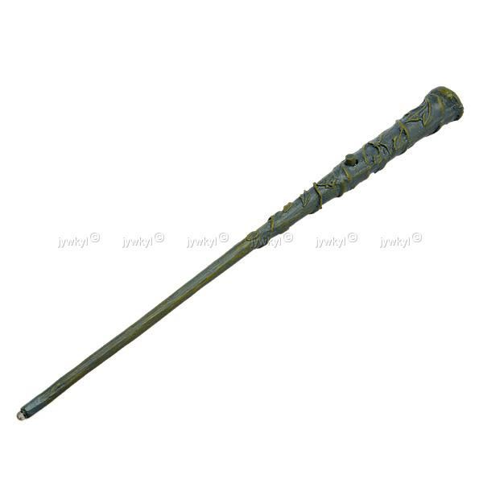

Hêtre - 35,1 cms - plume de phénix

Arme : Baguette rare
- +1 de portée, +1 d'attaque.
- Initiative : +1 d'attaque et +1 de défense si vous avez attaqué un autre Personnage durant le tour dernier.
- Favorable à l'indécision : si vous avez au moins 2 cibles possibles à attaquer, choisissez-en une aléatoirement et gagnez +1 d'attaque.
- Maîtrise : si vous avez bénéficié 4 fois de l'effet Favorable à l'indécision et / ou l'Initiative (les deux se cumulant).
- L'effet Initiative passe à 2 d'attaque et de défense au lieu de 1, si vous avez attaqué un autre personnage durant les 2 tours derniers.
- L'effet Favorable à l'indécision passe à 2 d'attaque au lieu de 1.